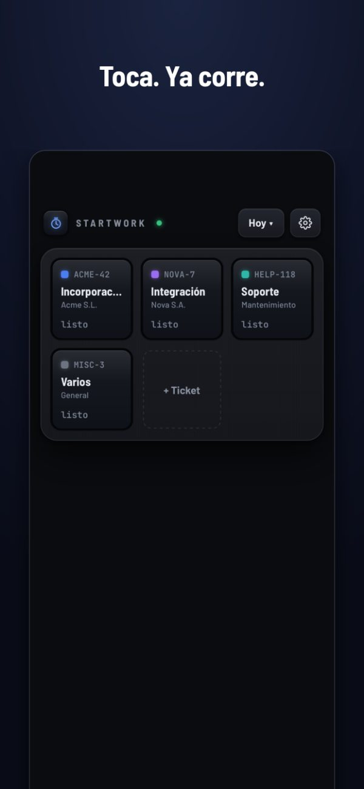
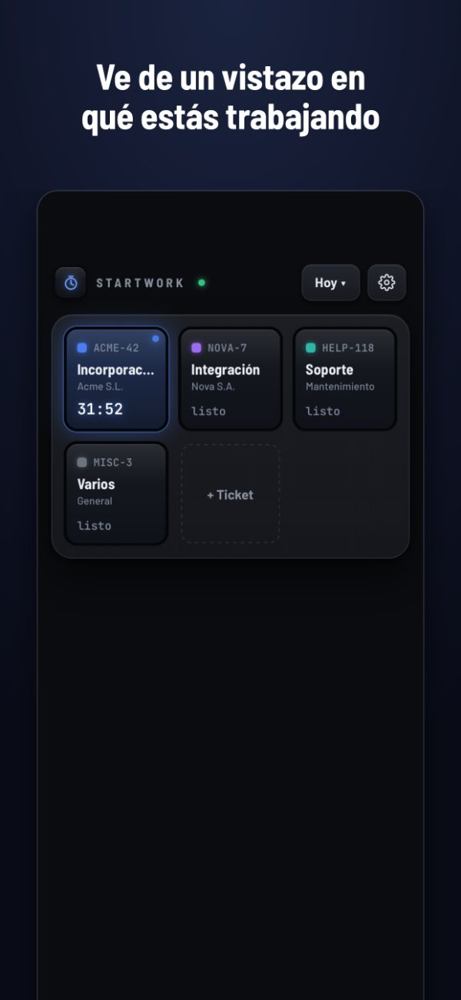
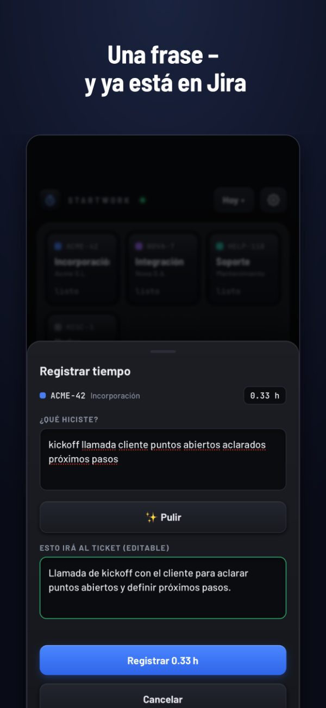
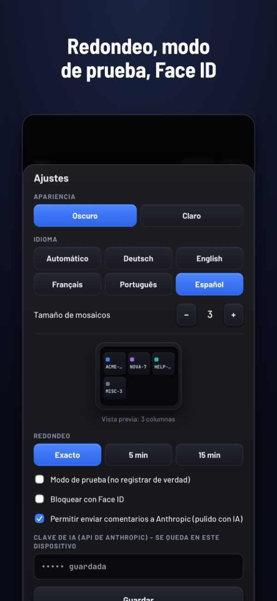

StartWork
Tus horas en Jira, sin líos
Toca un mosaico – el reloj corre. Toca otra vez, describe en una frase lo que hiciste – ya está en Jira. Sin cuenta, sin nube, nada que aprobar.
2,99 € · compra única · sin suscripción · iPhone




Sin cuenta, sin nube
StartWork funciona en tu iPhone. No tenemos servidor ni hay registro. Tu tiempo va directo a tu propio Jira – a ningún otro sitio.
Paga una vez
Una compra. Sin suscripción, sin anuncios, sin recogida de datos, sin costes posteriores.
Para quien factura por horas
Consultores, freelancers y agencias: registra en el momento en que cambias de tarea, no de memoria el viernes.
Qué hace
- Mosaicos para tus tickets habituales, con el título traído de Jira
- Añade tickets por clave o pegando un enlace de Jira
- Redondeo a 5 o 15 minutos, si tu empresa lo quiere así
- Modo de prueba: mira qué se registraría antes de registrarlo de verdad
- Notificación mientras corre un reloj, para que no se te olvide
- Bloqueo con Face ID – en el dispositivo hay un token de Jira
- Informe del día para compartir, y los días anteriores para la daily
- Opcional: pulir comentarios para el cliente con IA, con tu propia clave de Anthropic y solo tras tu consentimiento expreso
Antes de comprar
StartWork necesita una instancia de Jira en la que puedas iniciar sesión con tu propio token. Compatible con Jira Cloud, Server y Data Center.
El tiempo se registra como un registro de trabajo estándar de Jira. Si tu empresa usa Tempo con campos obligatorios («Work Attributes»), quedan vacíos.
Preguntas
¿Cómo registro tiempo en Jira desde mi iPhone?
Instala StartWork, indica una vez la dirección de tu Jira y un token de API, y añade tus tickets como mosaicos. Toca un mosaico para iniciar el reloj, toca otra vez para pararlo, escribe una frase – StartWork lo guarda como registro de trabajo en el ticket.
¿Funciona con Tempo?
Sí. StartWork escribe registros de trabajo estándar de Jira, que Tempo lee. Los campos obligatorios de Tempo («Work Attributes») no se rellenan.
¿Qué versiones de Jira son compatibles?
Jira Cloud (inicio de sesión con correo y token de API) y también Jira Server y Data Center (token de acceso personal).
¿Qué pasa con mis datos?
Se quedan en tu iPhone y van solo a tu propio Jira. Sin analítica, sin seguimiento, sin cuenta con nosotros.
¿Es una suscripción?
No. Pagas una vez en el App Store.